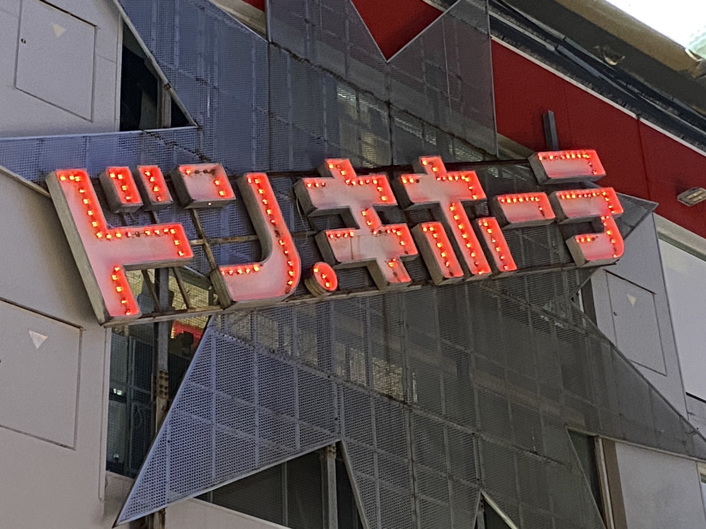
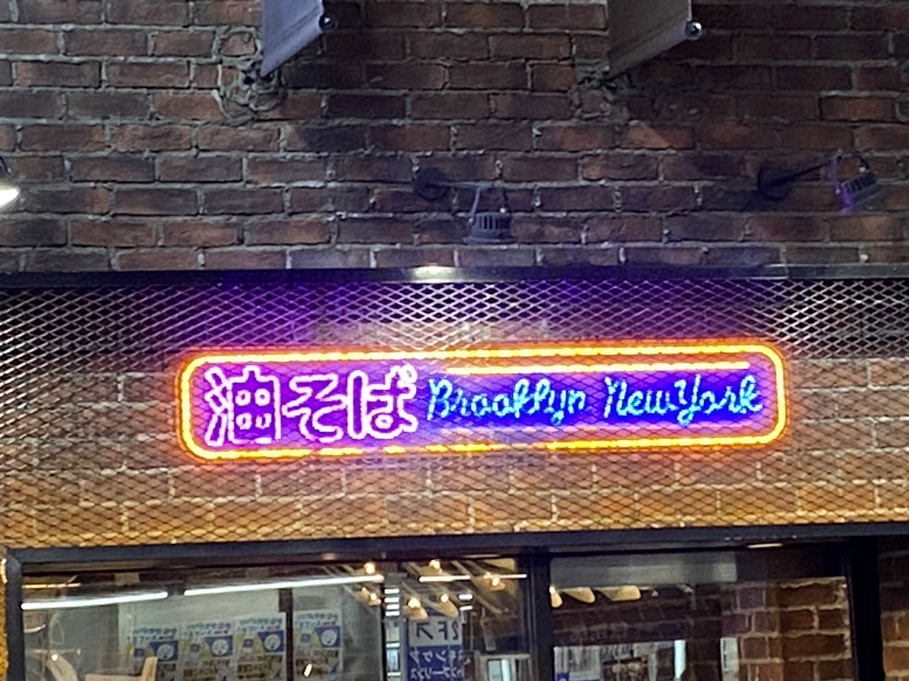

看板・サイン
和風・洋風
撮影日:2023/10/9 撮影者：白井羽瑠 撮影場所:洋麺屋 五右衛門(横浜ビブレ店)
一見和食屋に見える、渋い看板という印象。しかし、実際はパスタ専門店。
インパクト
撮影日:2023/10/9 撮影者:白井羽瑠 撮影場所:ドン・キホーテ(横浜駅西口店)
大きく、目にとまりやすい。

ネオン
撮影日:2023/10/9 撮影者:白井羽瑠 撮影場所:油そば Brooklyn New York(横浜駅西口)
現代風の派手なネオン。油そば屋だとは思えないようなお洒落なデザイン。
